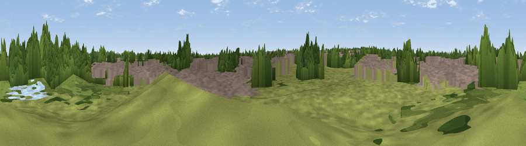

Viewpoint near Didcot
#44035 in England · top 93% of its area beats it · near DidcotThe view, rendered

A 360° render of this exact spot computed from the terrain model, tree cover and land cover — summer colours, afternoon light, calibrated against photographs of famous viewpoints. Real trees, hedges and buildings will differ in detail.
The panorama
Grey silhouette: terrain skyline in each direction (720 bearings, Earth curvature and refraction included). Dashed green: skyline with trees (+15 m) and buildings (+8 m) as obstacles. Blue strip: how far the ground is visible on each bearing.
Where the view opens
Wedge length = distance to the farthest visible ground on that bearing (vegetation-aware). Rings at 10, 25 and 50 km.
What fills the view
41% built-up · 29% woodland · 25% grassland · 4% cropland · 2% water
Angular shares of the visible panorama (visual magnitude), not map area. Landscape diversity 0.55 (0–1 Shannon).
Key numbers
More beautiful places nearby
The staircase of upgrades: each row has a higher view potential than everything closer. Driving times are estimates from straight-line distance, calibrated against real road routing — check an actual route before setting out.
| Place | Direction | Drive | Score |
|---|---|---|---|
| Viewpoint near Appleford-on-Thames | NW · 2 km | ~5 min | 55.2 |
| Round Hill | ENE · 4 km | ~10 min | 70.1 |
| Viewpoint near Watlington | E · 17 km | ~30 min | 70.6 |
| Viewpoint near Lewknor | ENE · 19 km | ~33 min | 70.8 |
| Viewpoint near Lewknor | ENE · 21 km | ~35 min | 74.4 |
| Viewpoint near Woolstone | W · 23 km | ~38 min | 76.7 |
| Martinsell viewpoint | SW · 44 km | ~64 min | 77.3 |
| Broadway Hill | NW · 61 km | ~84 min | 77.7 |
51.61485, -1.23767 · source: osm viewpoint · position refined by local search. Computed location — check access rights before visiting.